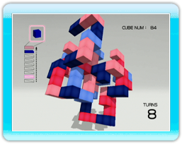
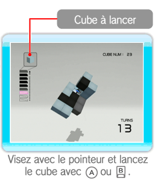
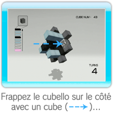
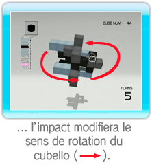
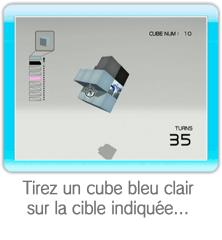
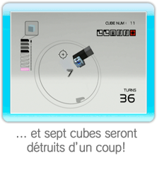
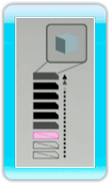
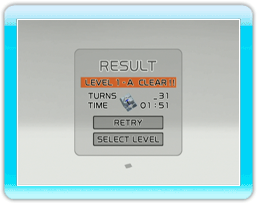

Lancez les cubes de votre réserve sur le cubello.
Une fois que vous avez détruit tous les cubes à l’exception du noyau, vous terminez le niveau.
Éliminez les cubes en reliant au moins quatre cubes de même couleur avec le cube que vous envoyez.
En fonction du nombre de tours effectués dans un niveau, d’autres cubes peuvent être ajoutés au cubello.
● Lancer et détruire des cubes

Pointez l’endroit où vous souhaitez envoyer le cube, puis appuyez sur

ou

pour le lancer. La rotation du cubello changera selon l’angle sous lequel le cube l’a frappé.
|  |
 |
 |
● Astuce pour éliminer les cubes
En reliant des cubes de même couleur, vous pouvez détruire de nombreux cubes d’un coup.
|  |
|
 |
● La réserve de cubes

Vous pouvez lancer des cubes jusqu’à ce que la réserve soit vide; elle diminuera cube après cube à chaque lancer.
Détruisez les cubes du cubello et le nombre de cubes en stock augmentera de trois, pour atteindre un maximum de dix.
Si le cubello s’approche suffisamment de l’écran pour le heurter, vous perdrez trois cubes de votre réserve.
Faites attention!
● Fin de jeu
Si vous videz votre réserve avant d’avoir détruit tous les cubes du cubello, la partie est terminée.
● Menu de fin

Une fois que vous avez réussi ou non un niveau, le menu suivant s’affiche avec vos résultats.
RETRY
(recommencer)
|
Recommencez à partir du même niveau
|
SELECT LEVEL
(choisir un niveau)
|
Revenez à l’écran de choix du niveau (en mode Stage uniquement).
|
EXIT
(quitter)
|
Revenez à l’écran de démarrage (en mode Endless uniquement).
|
Note: lorsque vous réussissez un niveau A pour la première fois,
NEXT LEVEL (niveau suivant) apparaît. Sélectionnez-le pour passer au niveau suivant.